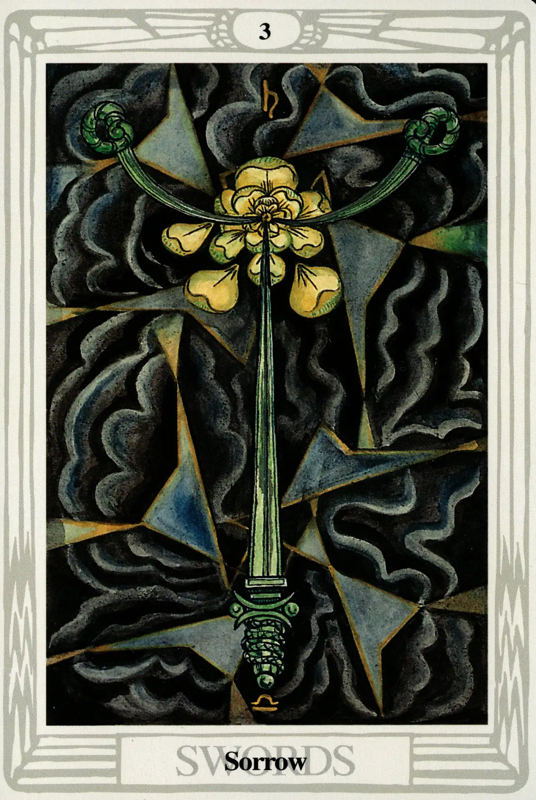

Swords
Three of Swords
Sorrow

(Saturn in Libra)
10° to 20° Libra
October 3 to October 12
Original Title: Lord of Sorrow.
Golden Dawn Model: Three hands holding three swords appear from clouds at the bottom of the card. The image is that of the Two of Swords, but the right and left swords are violently parted by a central third sword. The rose is destroyed and its five petals are dispersed into the air. There are no white rays.
Prince Scale for Binah: Dark Brown.
The Four Scales for Saturn: Indigo; Black; Blue-black; Black, rayed Blue.
The Four Scales for Libra: Emerald Green; Blue; Deep Blue-Green; Pale Green.
Formula: 3 (Binah) of Swords (Yetzirah) + Saturn in Libra = SORROW
Harris is strongly affected by the Three of Swords.
Please don't frighten me with the Sword suit. I have obeyed in every way. I can't see how they can be wrong. The 3 was a fair horror & great suffering.
—Harris to Crowley, date uncertain.
I wrote earlier that, because they reside in the supernal triad above the Abyss, all the aces, twos, and threes are happy. Obviously Sorrow does not sound like a happy card. It is very difficult for us to understand the nature of consciousness above the Abyss, where the actuality of things does not exist. In this abstract atmosphere, there are no things or even forms of things—nothing but pure potential. The “sorrow” of this card is not the same kind of sorrow evoked by, say, the death of a loved one or the loss of a lover. It is a profound state of consciousness that, from our below-the-abyss point of view, we can only attempt to describe. Sorrow falls pitifully short of an accurate description, but it is probably the best word the English language can offer us.
Ignoring for a moment the astrological aspects of the card, let's consider the unique Qabalistic factors that make the Three of Swords happy to be Sorrow.
- Swords represent Yetzirah, the formative world—oh, but sorry! There can be no forms in Binah or anywhere above the Abyss.
- Swords also represent Ruach, the human intellect—oh, but sorry! Intellect and reason cannot exist above the Abyss in Binah.
Without forms or reason, the mind must give way to a consciousness higher than itself The Three of Swords represents the wondrous trance of sorrow that first enlightened the Buddha. We should all be so lucky to draw Sorrow from the deck.